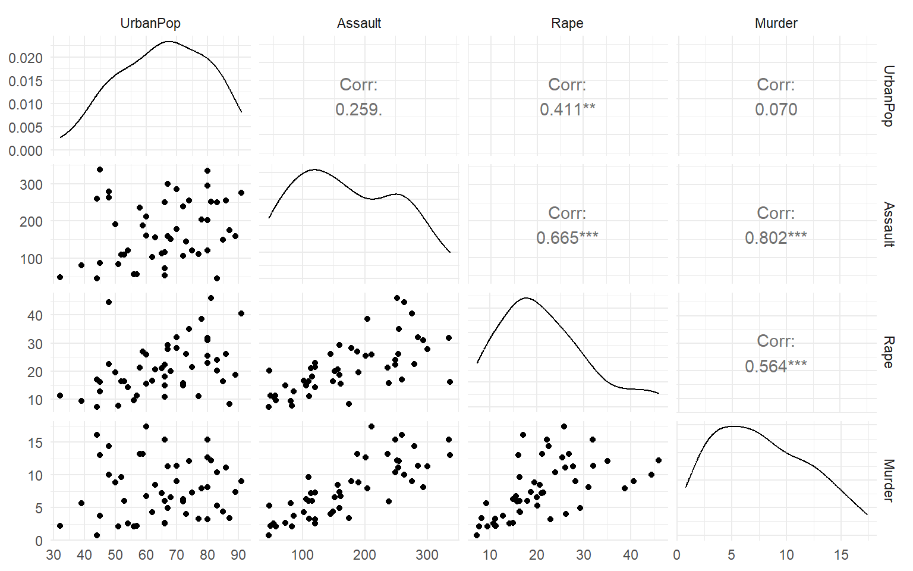
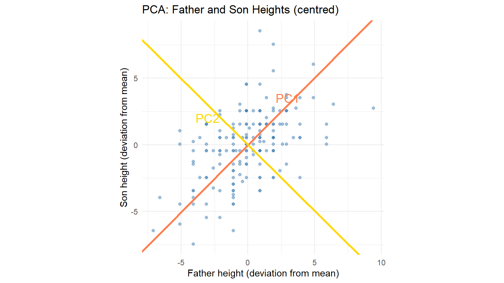
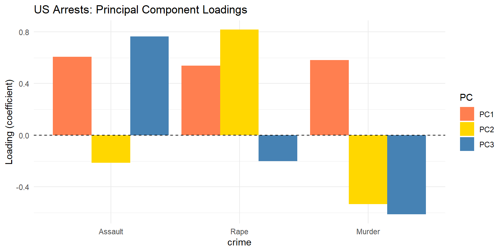
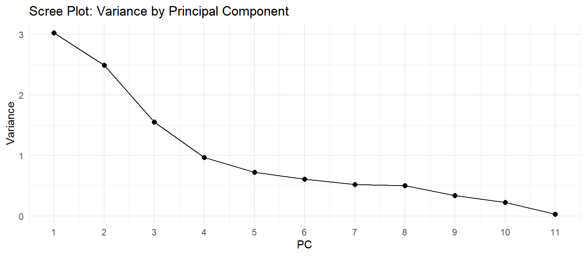
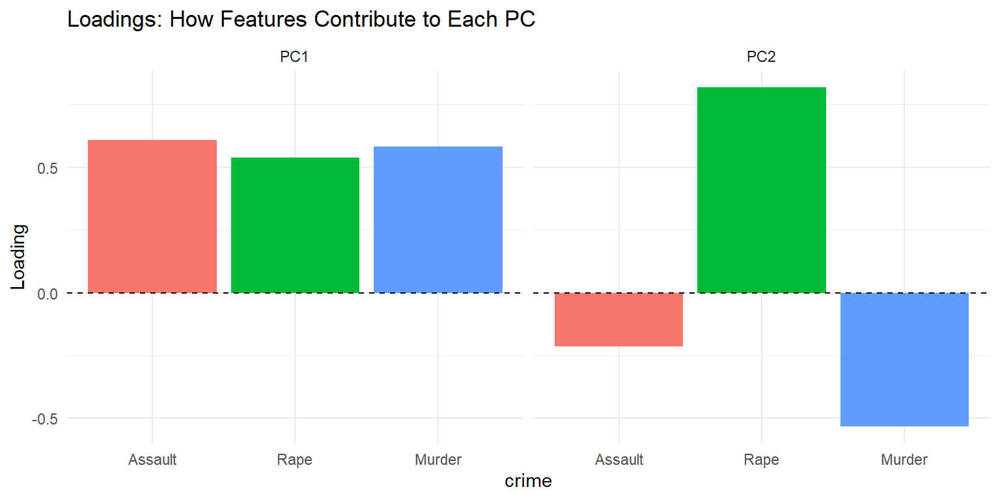
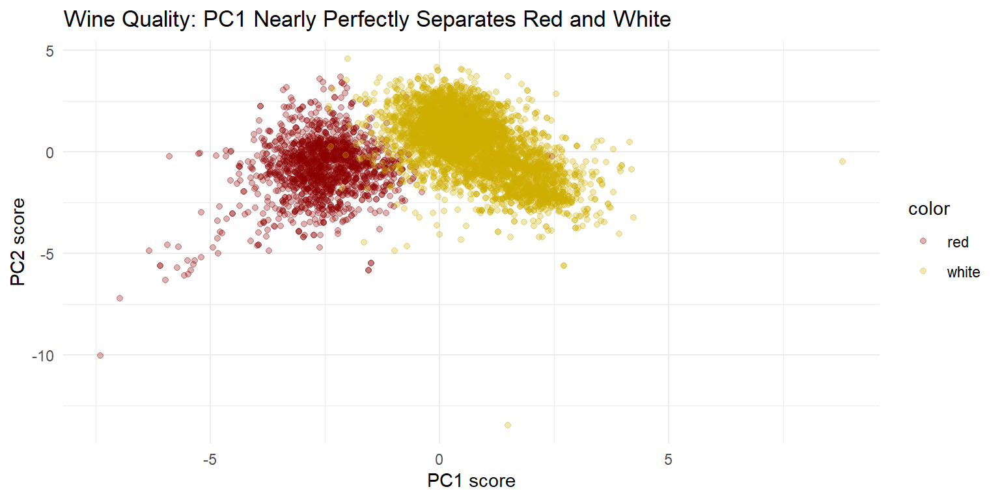

Finding Directions of Maximum Variance
In Chapter 7, we saw regression as projection onto a model-specified subspace.
Now we ask: what if we let the data determine the subspace?
Core Question
Along which directions do the features vary most?
Modern data sets often have many features:
Challenges:
Opportunity: Real data often occupy lower-dimensional structure.
Principal Component Analysis
Find orthonormal directions that capture maximum variance, in decreasing order.
Key insight: Directions of high variance carry the most information about differences among observations.
Unlike \(k\)-means (iterates to local optimum) or neural networks (gradient descent):
PCA solves directly via eigenvalue decomposition.
This places PCA in the classical tradition—yet addresses thoroughly modern problems.
| Chapter | Subspace Basis | Determined by |
|---|---|---|
| 7: Regression | \(\text{col}(X)\) | Model specification |
| 8: PCA | Principal components | Data covariance |
| 9: LDA | Discriminant directions | Class labels |
All three use orthogonal projection—they differ in how the target subspace is determined and used.
From McNeil (1977): violent crime rates per 100,000 population (1973)
| Variable | Description |
|---|---|
| Assault | Assault arrests |
| Rape | Rape arrests |
| Murder | Murder arrests |
| UrbanPop | Percent urban population |
Question: Can we summarize violent crime with a single index?

Figure 1: US Arrests: pairwise scatter plots
Strong correlations among crime variables:
The data don’t fill 4D space—they lie near a lower-dimensional structure.
Implication
Fewer than 4 dimensions may capture the essential variation.
6,497 wines with 11 chemical properties:
Plus: wine color (red/white) and quality rating (0–10)
Question: What structure exists in 11-dimensional feature space?
When \(d\) is large, several problems arise:
Consider a unit hypercube \([0,1]^d\) with inscribed ball.
| Dimension | Ball/Cube Volume Ratio |
|---|---|
| \(d = 3\) | 0.52 |
| \(d = 10\) | 0.0025 |
| \(d = 100\) | \(2 \times 10^{-70}\) |
In high dimensions, random points cluster near the corners, far from the center.
Donoho (2000)
While randomly generated high-dimensional data behave pathologically, actual data often occupy much lower-dimensional structures.
Examples:
Discover the low-dimensional structure that real data possess.
If data lie near a \(r\)-dimensional subspace (where \(r \ll d\)):
Father and son heights (centred):

Figure 2: Principal components of (father, son) heights
PC1 (coral): Direction of maximum variance
PC2 (gold): Perpendicular to PC1
Together, PC1 and PC2 form a rotated coordinate system aligned with the data’s natural variation.
Key Insight
PC1 is the direction such that projecting all points onto this line yields maximum spread (variance).
This connects to regression:
| Method | Projects onto… | Determined by… |
|---|---|---|
| Regression | \(\text{col}(X)\) | Model design |
| PCA | Principal directions | Data covariance |
Arrest rates vary on different scales, so we standardize to z-scores first.

Figure 4: US Arrests: loadings on each principal component
PC1: All three crimes load positively
PC2: Rape loads positively, Murder negatively
PC3: Captures remaining (small) variation
Let \(X_{\bullet,\bullet}\) be the centred \(n \times d\) feature matrix.
The covariance matrix:
\[ \text{Cov}(X) = \frac{1}{n-1} X^\top X \]
The first PC is a linear combination:
\[ c_{\bullet,1} = X_{\bullet,\bullet} \, v_{\bullet,1} \quad \text{with } \|v_{\bullet,1}\| = 1 \]
The vector \(v_{\bullet,1}\) maximizes variance:
\[ \text{var}(c_{\bullet,1}) = \max \left\{ \text{var}(X v) : \|v\| = 1 \right\} \]
Key Result
\(v_{\bullet,1}\) is the eigenvector of \(X^\top X\) with largest eigenvalue \(\sigma_1^2\).
\[ X^\top X \, v_{\bullet,1} = \sigma_1^2 \, v_{\bullet,1} \]
The eigenvalue \(\sigma_1^2\) equals the variance of \(c_{\bullet,1}\) (up to factor \(n-1\)).
The \(k\)th principal component maximizes variance subject to orthogonality:
\[ c_{\bullet,k} = X \, v_{\bullet,k} \quad \text{where } v_{\bullet,k} \perp v_{\bullet,1}, \ldots, v_{\bullet,k-1} \]
Solution: \((v_{\bullet,1}, \ldots, v_{\bullet,d})\) are the eigenvectors of \(X^\top X\), ordered by decreasing eigenvalue.
These eigenvectors form an orthonormal basis for \(\mathbb{R}^d\).
| Term | Symbol | Meaning |
|---|---|---|
| Loadings | \(v_{\bullet,k}\) | Coefficients defining PC direction |
| Scores | \(c_{i,k}\) | Observation \(i\)’s coordinate on PC \(k\) |
| Eigenvalue | \(\sigma_k^2\) | Variance explained by PC \(k\) |
Score formula:
\[ \text{score}_{i,k} = \langle x_{i,\bullet}, v_{\bullet,k} \rangle \]
The projection of observation \(i\) onto direction \(k\).
Why PCA Is Special
We solve directly via eigenvalue decomposition—no iteration needed.
Contrast with:
The closed form exists because maximizing a quadratic form (variance) subject to a quadratic constraint (unit norm) yields a linear eigenvalue problem.
If \(X = U \Sigma V^\top\), then:
Note: scale. = TRUE standardizes features to unit variance—essential when features are on different scales.
A scree plot shows variance explained by each PC.

Look for an “elbow”—where the curve flattens suggests a truncation point.
Cumulative proportion helps decide how many PCs to retain:
\[ \text{Proportion explained by first } r \text{ PCs} = \frac{\sum_{k=1}^r \sigma_k^2}{\sum_{k=1}^d \sigma_k^2} \]
Common heuristics:
A biplot shows both:
Useful for:

Figure 6: Loading plot example
PCA on 13 features (11 chemical + color + quality):
But the biplot revealed something striking…

Wine quality: PC1 vs PC2 scores colored by wine type
Unsupervised Discovery
PCA knew nothing about wine color labels—yet discovered color as the primary axis of variation.
Quantified via Gaussian mixture model:
This is EDA at its best: structure revealed, not imposed.
Why does this work?
High variance directions carry information about differences among observations.
Connection to Chapter 6: variance, like entropy, measures spread/uncertainty.
Principal component: \[c_{\bullet,k} = X_{\bullet,\bullet} v_{\bullet,k}\]
Eigenvalue problem: \[X^\top X \, v_{\bullet,k} = \sigma_k^2 \, v_{\bullet,k}\]
Variance explained: \[\text{var}(c_{\bullet,k}) \propto \sigma_k^2\]
Score (projection): \[\text{score}_{i,k} = \langle x_{i,\bullet}, v_{\bullet,k} \rangle\]
Chapter 9: Linear Discriminant Analysis
The Contrast
PCA asks: “Where is variance?”
LDA asks: “Where are classes separated?”
For the \(4 \times 2\) matrix:
\[ X = \begin{pmatrix} 2 & 3 \\ 4 & 5 \\ 6 & 7 \\ 8 & 9 \end{pmatrix} \]
A researcher measures height (cm) and weight (kg) for a sample of patients.
Without scaling, which variable will dominate PC1? Why?
The researcher converts height to meters. How does this change PCA?
When should you scale features before PCA?
For the US Arrests data:
All crime variables load positively on PC1. What does a high PC1 score mean?
Murder and Rape have opposite signs on PC2. What does this PC capture?
If you had to create a single “crime index,” would you use PC1? What are the trade-offs?
Both PCA and regression involve projection. Explain:
What determines the subspace in each method?
Why might maximum-variance directions differ from predictive directions?
Design a 2D example where PC1 is useless for predicting a response.
An Introduction to Statistical Learning (ISLR2) — Chapter 12 covers PCA
The Elements of Statistical Learning — Chapter 14 for advanced treatment
PCA: A Practical Guide — Shlens (2014), excellent tutorial
prcomp() documentation — R’s SVD-based PCA